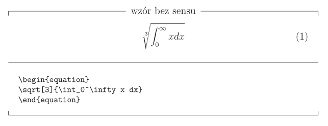
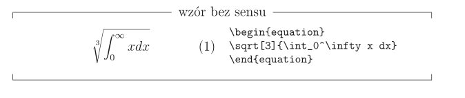

Pakiet dostarcza ¶rodowisk do prezentacji tekstu niepodlegaj±cego ³amaniu np. kodu programu -- rozwijane s± tabulatory (p. te¿ moreverb).
\begin{listing} | zawarto¶æ ¶rodowiska jest prezentowana bez
formatowania czcionk± typu typewriter, wewn±trz wywo³ywane jest
polecenie \listingsize, którego podstawow± funkcj± jest zmiana
wielko¶ci czcionki (domy¶lnie small), ale mo¿e s³u¿yæ do innych celów np.:
\def\listingsize{\footnotesize\color{green}} spowoduje równie¿
zmianê koloru czcionki. Wielko¶æ lewego marginesu jest ustawiana na warto¶æ
przechowywan± w parametrze \listingindent. Uwaga! warto¶æ tego
parametru jest ustawiana automatycznie przez polecenie
\begin{document}, tak wiêc je¿eli chcemy nadaæ mu inn± warto¶æ,
n |
\begin{listing*}{end*} | wersja ,,gwiazdkowa'' ¶rodowiska, dodatkowy parametr
definiuje sekwencjê zamykaj±c± ¶rodowisko (znak * na koñcu
sekwencji jest obowi±zkowy), oczywi¶cie zamiast end
mo¿na wpisaæ dowolny ci±g znaków; to nie jest polecenie w ogólnie
rozumianym sensie |
\begin{verbwrite}{zbiór} | zawarto¶æ ¶rodowiska jest zapisywana do wskazanego zbioru (p. te¿ filecontents) |
\verbinput{zbiór} | polecenie powoduje wczytanie wskazanego zbioru (bez formatowania) |
\begin{demo}[x]{tytu³} | zawarto¶æ ¶rodowiska jest prezentowana dwa razy --
jako nie formatowany tekst (tak jak verbatim) oraz w wersji
podlegaj±cej przetwarzaniu; parametr opcjonalny x mo¿e
przyjmowaæ warto¶ci w -- prezentacja na ca³± szeroko¶æ szpalty i
n -- obok siebie (warto¶æ domy¶lna). Przyk³ad 1
\begin{demo}[w]{wzór bez sensu}
\begin{equation}
\sqrt[3]{\int_0^\infty x dx}
\end{equation}
\end{demo}
Przyk³ad 2
\begin{demo}[n]{wzór bez sensu}
\begin{equation}
\sqrt[3]{\int_0^\infty x dx}
\end{equation}
\end{demo}

|
 W³odzimierz Macewicz
W³odzimierz Macewicz